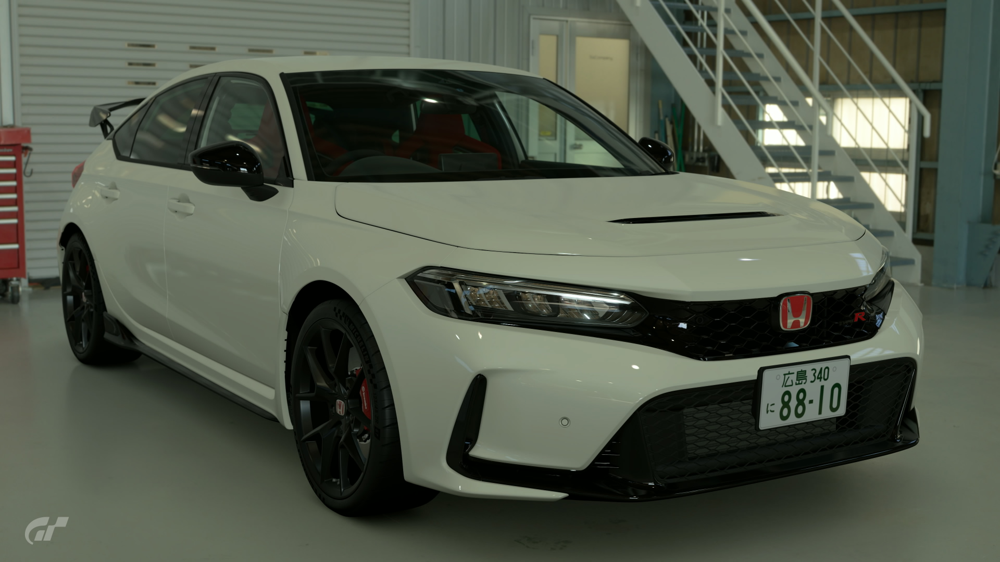

2022 Honda Civic Type R
This here is the 7th generation of the Civic Type R. I hear it set a fabulous time at the notoriously tough Nürburgring track in Germany. Speaking of Honda sports cars and the Nürburgring... The first-generation NSX was test-driven there during its development. Rumour has it, after its first test run, the test driver came back with a curious complaint. Apparently, the car had not performed very well 'in the air.' Now, the Nürburgring is known for its rolling track and many 'jumps.' Still, when the Honda engineers heard the news, they were shocked. Honda later built its own test track based on the Nürburgring in Hokkaido, Japan. It's known as 'the Takasu Proving Ground.' This new Type R was developed through testing at the Takasu PG and the Suzuka Circuit.
- Used (40 mi)
- Stock
- 6MT
- Saitama, Japan
- Championship White
- 325hp
¥6,750,000